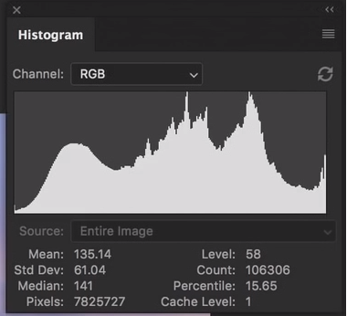

Name: Alex Rizk
Profile: DIG2000 Student
Email: contact@example.com
Phone: 123-456-7891
I am a student in this class developing this website for the DIG2000 final. I only do digial media as a side hobby even though I major in computer engineering. I spend most of my time studying, doing engineering stuff, exersizing, or just having a good time with friends.
This histogram can be very helpful by showing you the range of colors shown in your image, darker colors are on the lefmost side of the histogram and lighter colors are on the right. Another way color histograms are helpful is that they display colors, midtones, and highlights which can be adjusted by using the curve tool.

For this assignment we were required to interview on of our family members or relatives about the advantages or disadvantages of social media invating their privacy data. To record and edit audio I used a free program called audacity, for free peice of software it offers many options, albeit in a non-modern interface, so it takes some getting used to.In this assignment I interviewed my friend through the internet about a couple topics. Topics such as if he had ever experinced a personal ad online and if he viewed it a postive or negative.
https://www.youtube.com/watch?v=T66nCRDHv8M&feature=youtu.be
In this assignment I created a podcast "minisode" - a short audio recordiing that focuses on a specific topic. To record the audio for this podcast I used my old headset microphone, because it was so old the audio had some really hard static to remove. My topic of this "minisode" was about the gaming industry and why people should avoid it. To find out more about this topic click on the link below.
https://www.youtube.com/watch?v=OcwqOPDnWlg&feature=youtu.be
For this digital storytelling assignment I talk about my road to deadlifting 500 pounds, and all of the challenges that appeared along the way. These obsticals arose due to my lax nature when it comes to training, making my sessions inconsistent due to the general occuaptions of life. I tried to record everything to the best of my ability and attempted recall an intersting story, but having old equuiptemnt made for a lackluster video.
The VFX assignment we had the option of choosing one from eleven different kinds of visual effects challenges from basic text box overlay, to on camera visual effects. From the selection I chose to do the animation project. Needless to say, even though it's only 15 seconds of animation it took me around 12 hours to figure out how to use Adobe After Effects then spend the rest of the time gureling animating, frame by frame, the images one by one.
In this TED talk Daphne Bavelier starts off debunking myths about technology and video games as well as how video games, even action-packed shooter games, can help us learn, focus and, fascinatingly, multitask.
She mentions towards the end of her talk that video games can greatly benefit people going through rehabilitiation, as well as aiding disabled children with their cognitive functioning.
Watch a Video
Image manipulation is already exploited by autocratic regimes. It’s a dark art that goes back to Joseph Stalin who made his enemies disappear. AI today is capable of making deepfake videos like this where comedian Bill Hader morphs into Tom Cruise. As the technology advances the danger is that deepfakes will be used to mislead voters in democratic countries.
Watch a Video
Florian Radke talks about how Augmented reality is not a toy, it’s a powerful tool that will help solve some of the worlds biggest problems. If we do it right, it can be the next great platform for education, human connection and productivity. Like Iron man, we all will soon be surrounded by data and 3D models that we can interact with, as early as the year 2025.
Watch a Video
Earlier in this class we created a blog using wordpress, a template system that allows users with basic computer knowledge to drag and drop features into their website rather than coding it. Wordpress uses PHP unlike the website you are currently on, and on this wordpress blog there are three sections containing visual effects, suggestions for the course, and social concepts.
View Blog